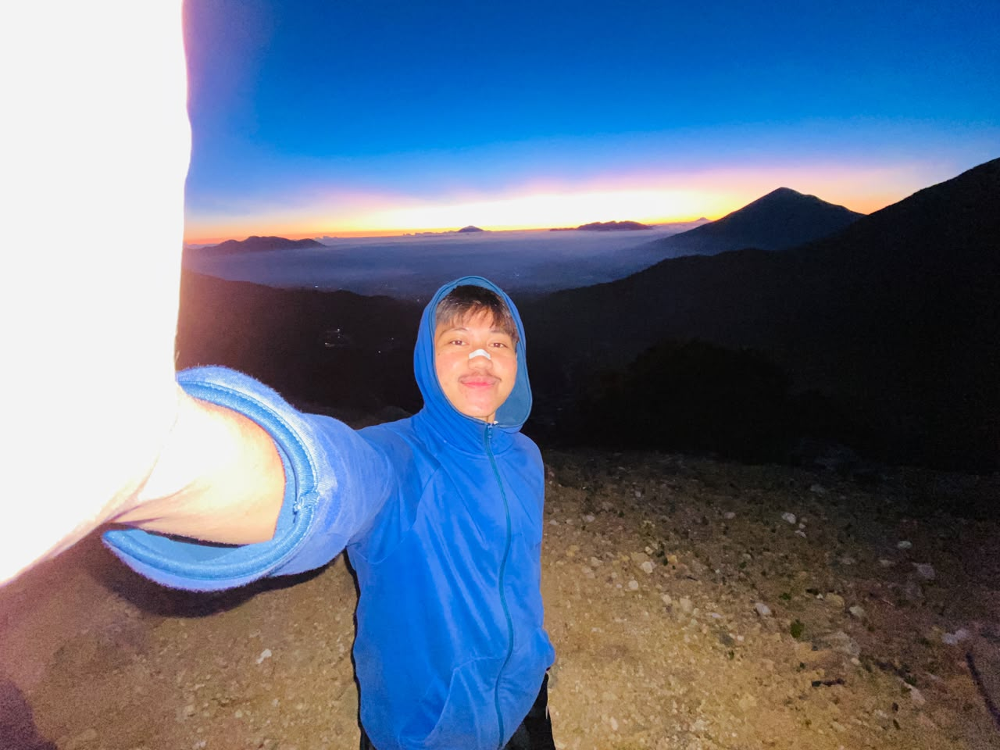
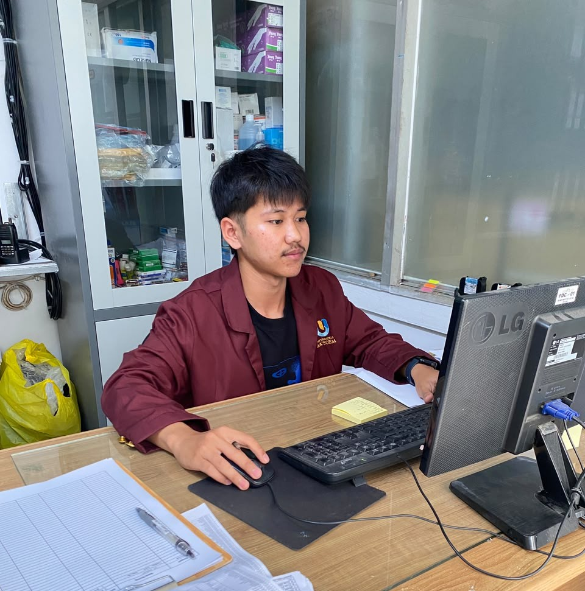
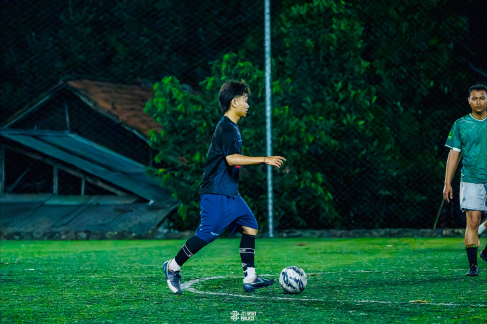

Galeri Foto & Dokumentasi
Koleksi foto kegiatan, hobi, dan proyek. Klik setiap foto untuk membuka lokasinya langsung di Google Maps!

Foto Pemilik Web 🏔️
Foto diri pribadi pemilik web saat berada di Gunung Papandayan.
📍 Lokasi: Gunung Papandayan →
Kegiatan Kampus 🎓
Suasana aktivitas akademik di Universitas Ma'soem.
📍 Lokasi: Universitas Ma'soem →
Hobi & Olahraga ⚽
Dokumentasi kegiatan olahraga di saat hari libur.
📍 Lokasi: Lapang Minisoccer Manglayang →